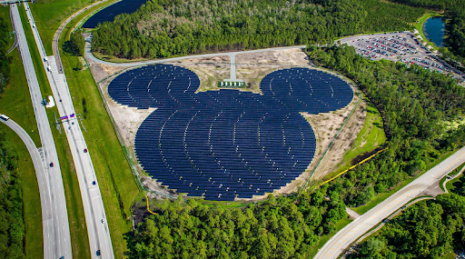

O mercado da energia sustentável  A energia solar é uma das mais sustentáveis formas de transformar recursos naturais em eletricidade, já que o sol é uma fonte inesgotável e limpa – uma solução especialmente importante no contexto atual, no qual as mudanças climáticas e avisos de danos “irreversíveis” no planeta – segundo relatório da ONU – estão cada vez mais comuns. E, apesar de o Brasil ter sido o 9º país do mundo a ter mais novos sistemas de geração solar instalados em 2020, essa fonte representa apenas 1,7% da matriz energética nacional, de acordo com dados da Aneel e da Absolar – bem atrás das hidrelétricas e termelétricas, hoje no centro da crise de energia brasileira, com secas, baixos níveis dos reservatórios e contas de luz mais caras. Dados do Boletim Mensal de Energia apontam que a geração de energia solar pode chegar a 18 TWh em 2021 - um crescimento de 67% em relação aos 10,7 TWH de 2020. Desse total, a geração solar distribuída terá o maior crescimento, em torno de 125%, gerando 10,8 TWh em 2021 ante 4,8 TWh em 2020. Com base nisso, um grupo de empresários criou a criptomoeda LIGHT DeFi, recentemente lançada no mercado com o objetivo de atrair investidores e entusiastas da energia limpa. O projeto A LIGHT DEFI tem sede no Uruguai e foi criada com base em opções tecnológicas e industriais. Reúne os conceitos de sustentabilidade e Finanças Descentralizadas (DeFi). Em 8 de agosto de 2021 lançou o token com fornecimento de 10 bilhões de unidades. Apenas duas horas após o lançamento, o ativo registrou valorização de 14.000% e arrecadou mais de R$ 1 milhão, com 2.600 investidores, para a construção de uma fazenda de energia solar. Proporciona aos consumidores acesso a energia de qualidade a partir de uma matriz energética limpa, confiável e sustentável. A iniciativa surgiu em um momento em que se intensificaram as discussões acerca dos gastos de energia elétrica pela mineração de criptomoedas - que, mesmo sendo irrisórios quando comparados aos gastos de energia de outras atividades relacionadas ao mercado financeiro tradicional, por exemplo - o setor de energia sustentável começou a perceber a blockchain como forma de assegurar transparência aos processos e reforçar seus compromissos para o aumento da geração de energias sustentáveis e a consequente redução de emissão de poluentes. Esse é um passo importante para estar alinhado com o 7º Objetivo de Desenvolvimento Sustentável (ODS) da Agenda 2030 da ONU, que fala sobre "garantir acesso à energia barata, confiável, sustentável e renovável para todos". A proposta é que 5% de toda transação do token seja destinada para criação e desenvolvimento de projetos sustentáveis e a expectativa é, no futuro, aumentar a capacidade dessa primeira usina, além de construir outras pelo mundo. Regras de negócio O token foi desenvolvido através da rede blockchain Binance Smart Chain (BSC), classificada como uma (BEP-20) e utiliza do mecanismo de Proof of Stake (PoS), para que as transações sejam concluídas através de smart contracts. Sendo a LIGHT DeFi pioneira no mercado de criptoativos, seu token é um dos primeiros projetos de blockchain do Brasil que integra o DeFi + PIX. Com um sistema deflacionário, o token LIGHT DeFi financia direta e automaticamente a construção de usinas solares fotovoltaicas no mundo. Foi idealizado para ser sustentável: o montante recebido com a geração de energia será utilizado para a compra de mais criptoativos. A ideia é que, mesmo que não haja grande procura por investidores em determinado momento, a moeda seja elevada pelo próprio capital investido com o retorno das usinas. Os lucros obtidos pela usina, quando estiver em operação, serão conduzidos com a máxima transparência e seriedade. O projeto inclui a contratação de uma auditoria independente do grupo empresarial que auditará os resultados e emitirá relatórios públicos. A escritura do terreno será exposta através de um NFT que permitirá que o investidor tenha acesso ao hash. Recentemente recebeu o certificado auditado pela Certik – responsável por auditar empresas como a PancakeSwap, Bynance e Polygon – reforçando a seriedade deste projeto. O contrato não é e nunca será renunciado, pois possui liderança, sendo possível então fazer alterações em taxas futuras. Graças a aquisição de uma API, permite que a compra da LIGHT DeFi possa ser realizada pelo próprio site do token. Assim o depósito fica atrelado ao número da carteira permitindo que terceiros possam depositar via PIX diretamente. A implementação Três meses após seu lançamento e com mais de 20 mil usuários no mundo todo, a Light DeFi firmou a compra de um terreno de 17 hectares no Ceará para a construção de uma usina fotovoltaica. A expectativa é que o projeto saia da planta ainda em 2022 e gere, inicialmente, 1 megawatt, com expansão para 3 MWh de energia que será captada e poderá abastecer mais de 1500 casas. Além de atender uma demanda local, este movimento vai contribuir bastante com a economia da região, uma vez que vai gerar empregos diretos e indiretos. A estimativa é que, na primeira parte do projeto, cerca de 80 empregos sejam criados. A construção da primeira usina fotovoltaica não depende apenas dos desenvolvedores. Também depende da comunidade. A aquisição da terra será o primeiro passo. Um ponto bem interessante é a instalação de câmeras na usina para que os investidores tenham o controle 24h por dia e acompanhem de perto o andamento do seu investimento. Os números Fornecimento total: 7.59B Detentores: 27.805 Valor de mercado totalmente diluído: $2.944.996 Volume em 24h: $5.038 A redistribuição da usina fotovoltaica para construir novos recursos será de 50%, aos detentores de tokens 30% e para o projeto 20%. Taxas de compra e venda transacionais: Carteira da usina: 5% Liquidez: 1% Desenvolvimento do projeto e marketing: 2% Detentores: 1% Queimar: 1% Abaixo gráfico de 13/06/2022 mostrando alta às 02:15h: Sua aquisição poderá ser feita pelas exchanges abaixo: Uniswap - https://app.uniswap.org/#/swap?chain=mainnet PancakeSwap - https://pancakeswap.finance/swap?outputCurrency=0x842668E2B9A73240aBF6532DEdC89c9c3e050C98 ZCore Finance - https://join.zcorefinance.app/join/SZI7KQ0U BigONE - https://big.one/en/trade/LIGHT-USDT Indacoin - https://buy.light.indacoin.io/ Light DEX - https://dex.light.sv/#/swap Ou ainda: Via PIX - https://pix.xchange.ee/?currency=LIGHT Estudo de uma DeFi, detalhando as suas características, objetivos e funcionalidades. Discorrido para PUC/MG - Pós Graduação em Blockchain e DLT's. Conclusão da cadeira de Economia Digital e Aspectos Regulatórios Publicado em "URL LINKEDIN" #economia #digital #blockchain #energiasustentavel #energiasrenovaveis #energiasolarfotovoltaica #sustentabilidade #financas #energialimpa #criptoativos #projetos